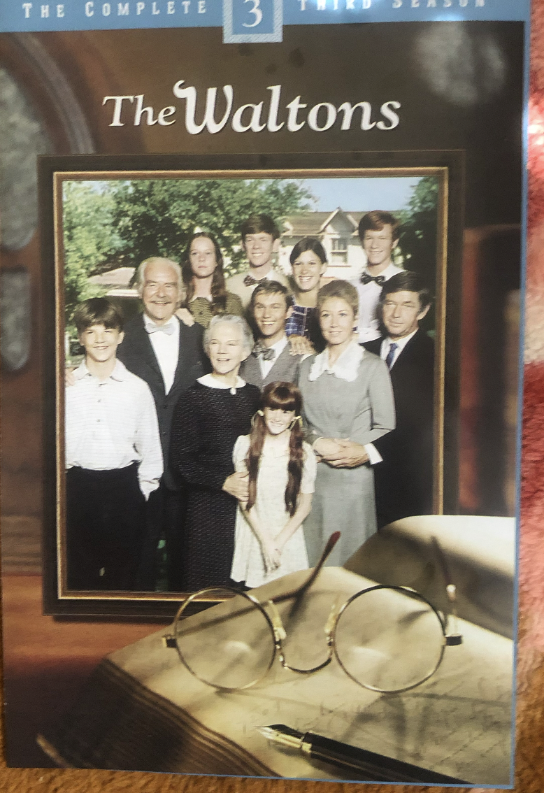

Childhood
My mother loves movies/shows that are based on true stories, and since I was a kid we watched many types of cinema that was based on true stories, and I grew to enjoy them as well. One of the themes my mother and I enjoy about these stories is persevering through lifes struggles
The Waltons

Above is a photo of one of the Waltons DVD sets my family owns. The show is based on the real events of the Hamner family(known as the Walton family in the series). The story is written from the perspective of the eldest of the Hamner kids "John Boy" Walton. Throughout his childhood he journaled about the life experiences of his family, and in the future this helped create the show that was based on his past. The show goes through the ups and downs of life and has many lessons that I have found valuable.